Os gregos eram um povo politeístas,
portanto possuiam vários deuses que podiam representar desde coisas
simples como uma profissão até coisas mais complicadas como a morte.
Entre os principais deuses gregos estão:
| 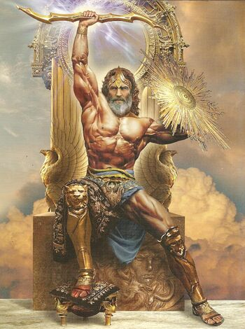 |
Zeus
|
Deus dos
deuses e Deus dos raios
|
| Filho do titã Cronos e da titã
Reia, salvo por sua mãe de ser devorado logo após seu nascimento,
libertou seus irmãos da barriga de Cronos e liderou a guerra contra
os titãs. |
| 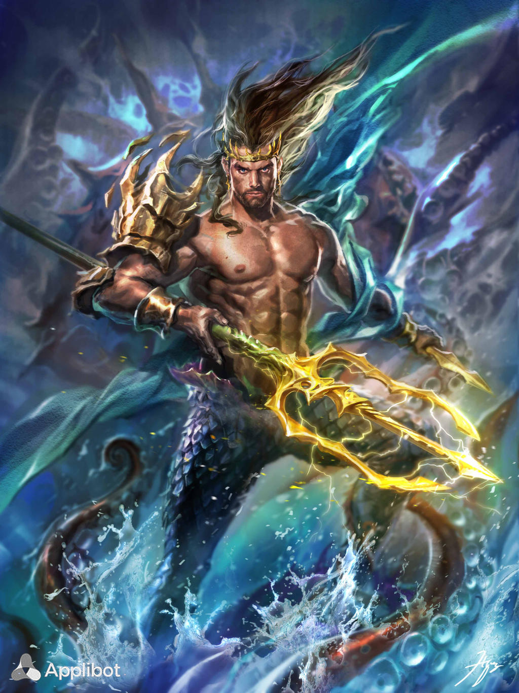 |
Poseidon
|
Deus dos
oceanos, dos mares, dos terremotos e dos cavalos
|
| deus dos oceanos, dos mares, dos
terremotos e dos cavalos Filho do titã Cronos e da titã Reia,
também foi salvo de ser engolido pois sua mãe teria simulado dar a
luz a um cavalo. Um dos três governantes junto aos irmãos Zeus e
Hades, responsável pelos ocenanos e mares. |
| 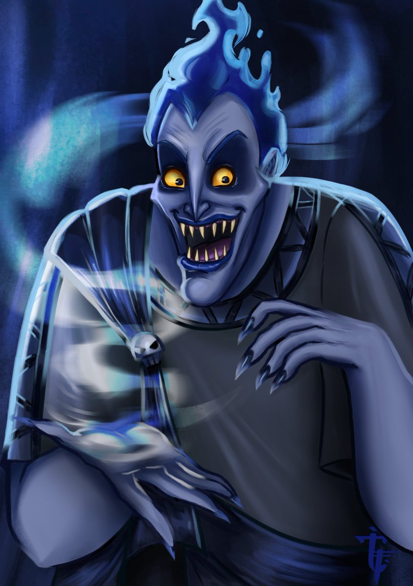 |
Hades
|
Deus da
morte e Senhor do submundo
|
| Filho do titã Cronos e da titã
Reia. Um dos três governantes junto a Zeus e Poseidon, responsável
pelo mundo inferior. |
| 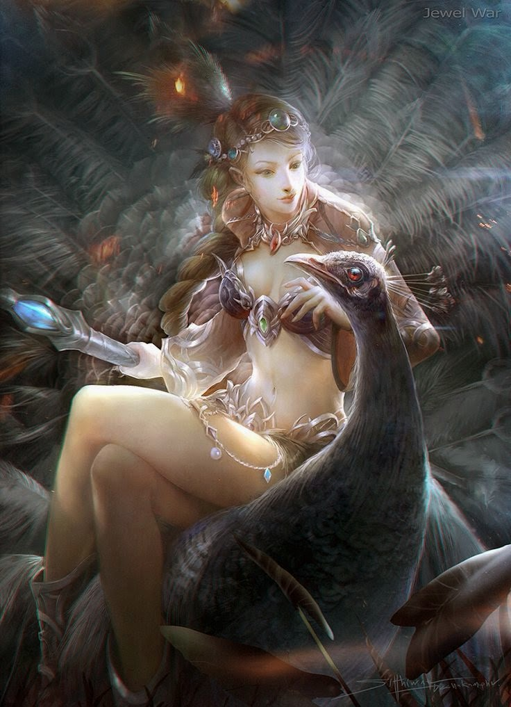 |
Hera
|
Deusa do
casamento e da fertilidade
|
| Filha do titã Cronos e da titã
Reia. Se casou com o irmão Zeus e é considerada a Rainha dos deuses
e Senhora do Olimpo. |
| 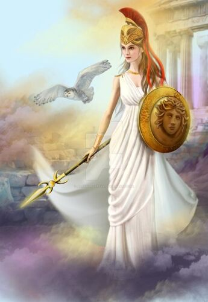 |
Atena
|
Deusa da
sabedoria, da Justiça e das Artes
|
| Nascida da cabeça de Zeus após ter
uma forte dor de cabeça e pedir para Hefesto lhe dar uma machadada.
Patrona da famosa cidade de Atenas e uma das três deusas virgens. |
| 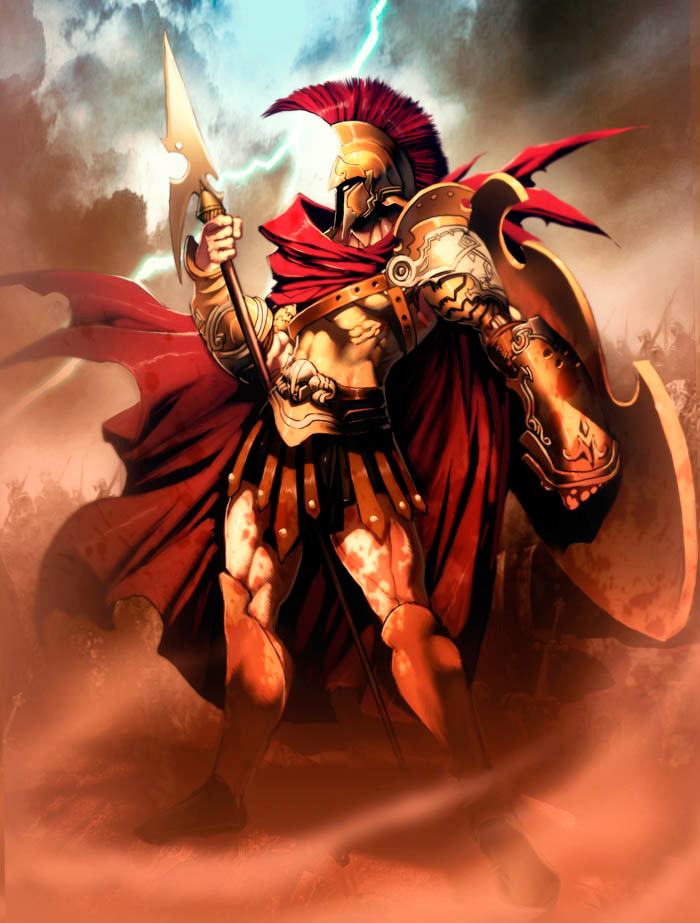 |
Ares
|
Deus da
guerra, filho de Zeus e Hera
|
| Filho de Zeus e Hera. Amante da
deusa Afrodite. Considerado um simbolo de selvageria se comparado a
Atena, que seria uma visão mais estratégica da guerra. |
| 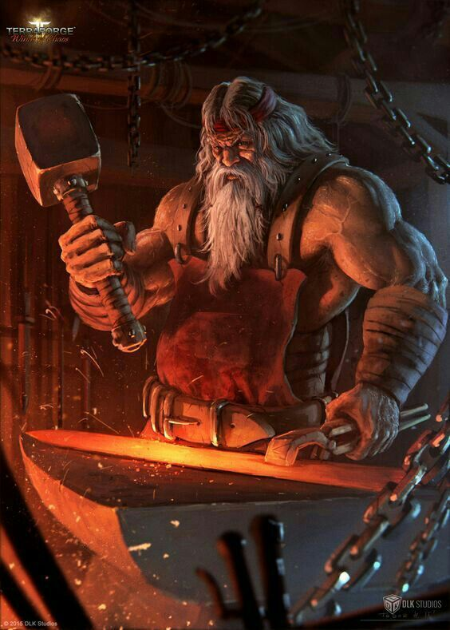 |
Hefesto
|
Deus do
fogo e Ferreiro dos deuses
|
| Filho de Zeus e Hera. Por ter
nascisdo feio e com um problema nas pernas foi considerado
repugnante pelos pais, fazendo Hera o jogar para fora do Olimpo.
Responsável por forjar os raios de Zeus e criador do Elmo de Hades. |
| 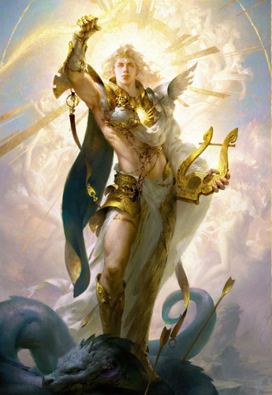 |
Apolo
|
Deus do
sol, da música, da poesia, da arquearia e das profecias
|
| Filho de Zeus e Leto, nasceu na
ilha de Delos, pois sua mãe estava se escondendo de Hera. Irmão
gêmeo de Artemis e um dos únicos deuses a ter tanto relações
amorosas com homens quanto com mulheres. |
| 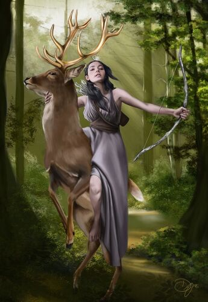 |
Artemis
|
Deusa da
caça e dos animais selvagens
|
| Filha de Zeus e Leto, nasceu na
ilha de Delos, pois sua mãe estava se escondendo de Hera. Irmã
gêmea de Apolo e uma das três deusas virgens. |
| 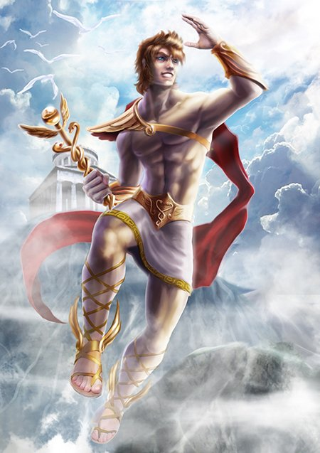 |
Hermes
|
Deus da
velocidade, dos viajantes e dos ladrões
|
| Filho de Zeus e a ninfa Maia,
conhecido por sua lábia e por usar seus poderes tanto para o bem
quanto para o mal. |
| 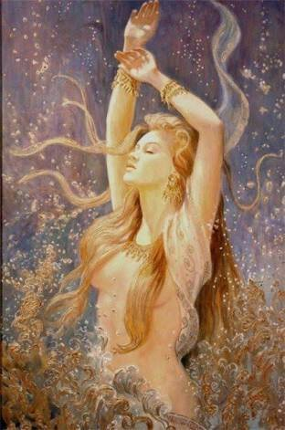 |
Afrodite
|
Deusa do
amor
|
| Existem duas versões para a origem
da deusa. Na primeira ela teria nascido do esperma de Urano após
seu membro ter sido cortado por Cronos. Na segunda ela teria
nascido do relacionamento de Zeus e Dione. De toda forma, é
considerada a personificação da beleza e da luxuria. |
|
Deméter
|
Deusa da
agricultura e da gestação
|
| Filha do titã Cronos e da titã
Reia. Conhecida por ter controle das estações por estas dependerem
de suas emoções. |
| 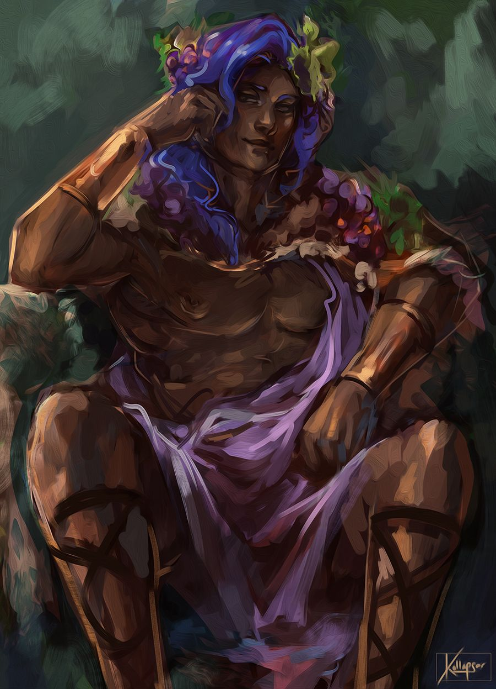 |
Dionisio
|
Deus do
vinho, das festas e da loucura
|
| Filho de Zeus e Sêmele. Antes que o
deus do vinho pudesse nascer, Hera fez uma armadilha para sua mãe
que acabou morrendo ao ver Zeus em sua forma divina. Para que
Dionisio não morresse, Zeus costurou o coração do menino em sua
coxa, onde foi gerado até finalmente nascer. |